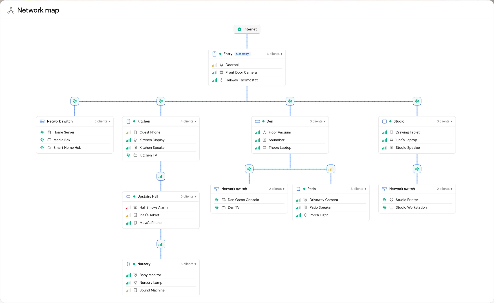
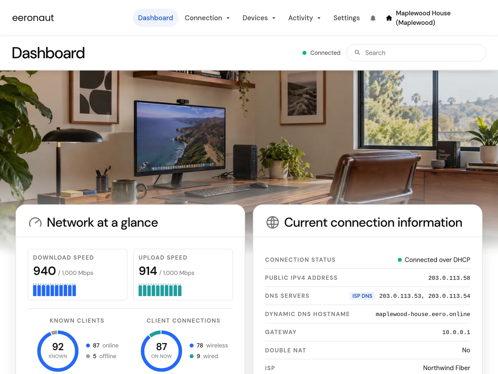
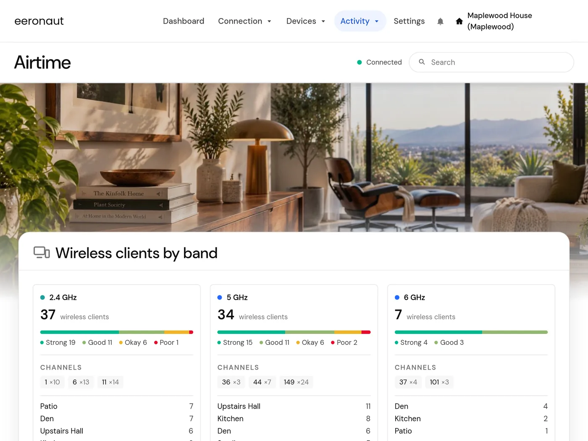
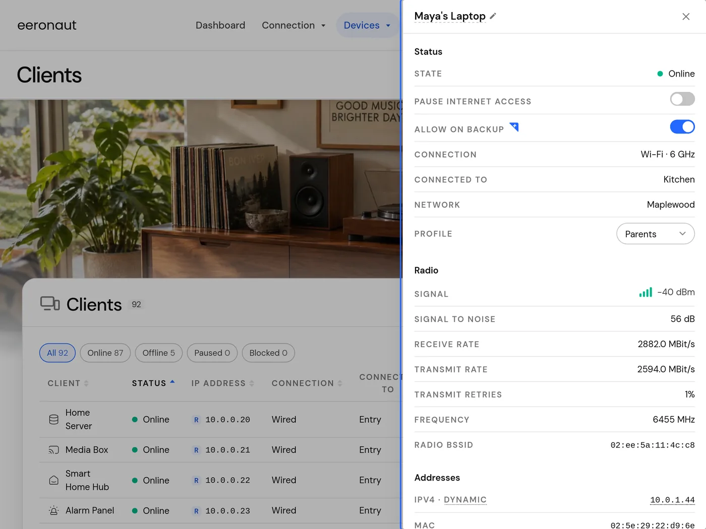
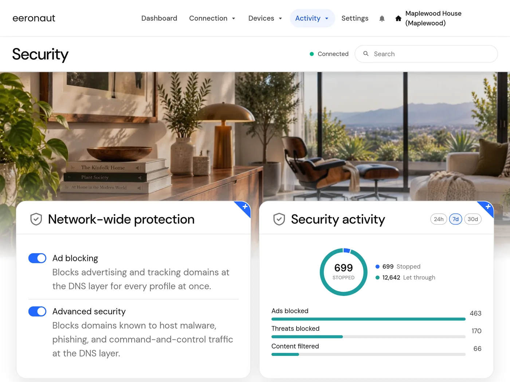
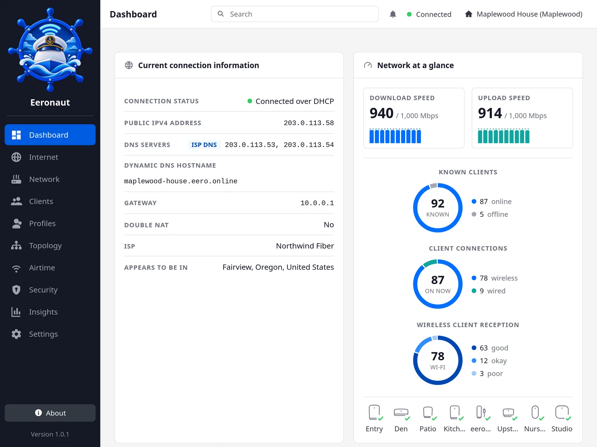

See what's connected to what
The topology map shows every eero and every device on it, with signal bars for each, so you can see which eero a device is using and which devices are hanging on by one bar.

Free and open source
Eeronaut is a web dashboard for eero mesh networks. It runs at home on any computer you've got and does nearly everything eero's phone app does, plus a few things it doesn't.
Eeronaut is free software. Not affiliated with eero or Amazon.

eero's official app is built for a phone. Eeronaut pulls the same controls (kicking and screaming) into a browser on your desktop. Eeronaut has room for a full device list, a map of your network, and graphs eero's app doesn't draw.
The topology map shows every eero and every device on it, with signal bars for each, so you can see which eero a device is using and which devices are hanging on by one bar.

See which channel each band is on, how busy the air is through the day, and every time eero changed channel. When the Wi-Fi feels slow, this is where you'd find out why.

Sort your clients by any column and filter them by status. Open one to see its signal, transfer rates, and addresses. Pause devices, rename them, or move them to profiles without leaving the list.

Ad and threat blocking at a glance, and IPv4 forwards and IPv6 pinholes in one list you can edit in place. Adding a forward takes one line, not five screens.

Some settings make every eero restart. Eeronaut tells you before you save, not after the network drops.
Actual results are shown against the speeds you pay for, so you know when your ISP is falling short.
Choose from several public DNS providers without getting your hands dirty typing in IP addresses.
Keeps a hostname pointed at your home with DuckDNS, Dynu, dynv6, FreeDNS, or No-IP.
Don't subscribe to eero Plus? Don't want to? Hide the disabled features that need it. Spam begone!
Including Hungarian, Polish, and Ukrainian. They don't even sell Eero there! My bad.
Choose a password on the first visit. Nobody else on your network gets in without it.
The included themes are all responsive and fit any screen.
Eeronaut comes with several themes, all of which include light and dark variants. Switch between them any time, or build your own.

The original Eeronaut theme: a dark rail, white cards, and a clear blue for anything you can press.
Docker is the easy way. Eeronaut runs on any wired or wireless always-on computer on your Eero network. Images are built for amd64 and arm64.
Download docker-compose.yml into a folder of its own. No editing needed.
From that folder:
docker compose up -dGo to http://localhost:3340, or the computer's address on your network, choose a password, and sign in with your eero account.
Updating later is docker compose pull && docker compose up -d. To run it without Docker, see the README.
Yes. If you sign in to eero's app with your Amazon login, you'll need to invite yourself as an admin first (in Eero's app: Settings, User Permissions, +, Invite admin), accept the invitation, and use that email address or phone number to sign in with Eeronaut.
No. Like eero's own apps, Eeronaut makes its changes through eero's cloud, which passes them on to your eeros. Eero doesn't offer a local way to change settings. Eeronaut is the next best thing: a browser-based front end for that cloud that runs in your home.
Eeronaut runs on your own computer and talks to Eero's cloud, just as Eero's own app would. It doesn't send anything about you or your network anywhere else. The one other thing it contacts is GitHub, once a day, to see whether a new version is out. If you turn on dynamic DNS, it also updates the provider you picked.
Only if you pay for them. eero Plus features work only when your network has a subscription. Without one, Eeronaut can optionally hide those disabled features so they don't get in the way.
Yes. Eeronaut is open source under the AGPL-3.0-only license, and the code lives on GitHub.
An Eero owner who wanted browser control for years. A human designed Eeronaut and Claude Code built it. Eeronaut isn't affiliated with eero LLC or Amazon.com, Inc.